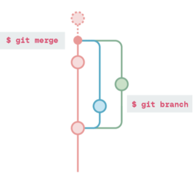

Establece la información de usuario para que se utilice en el historial de confirmaciones.
Establece el nombre que desee utilizar en las confirmaciones.
$ git config --global user.name "[name]"
Establece el correo que desee utilizar en las confirmaciones.
$ git config --global user.email "[direccion email]"
Habilita los colores en la salida de las línea de comandos.
$ git config --global color.ui auto
Puede crear un nuevo repositorio de git localmente o hacer una copia de un repositorio existente online para trabajar.
$ git init
El comando git init convierte la carpeta donde se ejecutó el comando en un nuevo repositorio de Git al agregar una carpeta .git e indica a Git que comience a buscar cambios.
$ git clone "[url]"
El comando clone descarga una copia de un repositrio desde un servidor remoto o un servicio como Github, GitLab o Bitbucket. Esto incluye todos los archivos y confirmaciones, así como las conexiones a todas las ramas remotas.
Git facilita el seguimiento de los cambios en los archivos a lo largo del tiempo. Una vez que haya inicializado o clonado un repositorio, todos sus cambios se encontrarán en un estado de trabajo en proceso y Git podrá ver que cambis se han realizado. Sin embargo, para que Git realice un sesguimiento de una instatánea de sus cambios, deberá añadir y confirmar su trabajo.
$ git add [file]
Prepara un solo archivo para su confirmación.
$ git add .
Prepara todos los archivos modificados en la carpeta actual para su confirmación.
$ git commit -m "[comentario descriptivo]"
Hace un registro permanente de las instatáneas de los archivos que se encuentran en el historial de versiones e incluye un breve mensaje sobre lo que ha cambiado. Nota: Si ejecutas git Commit sin -m, se encontrará en el editor de texto por defecto de tu terminal, normalmente es vim. Desde aquí podrás escribir un mensaje de confirmación, guarde y salga del editor para completar la confirmación.
Git ofrece una gran visibilidad del estado de su trabajo actual, su historial de confirmaciones y los detalles de estos cambios.
$ git status
Muestra información sobre el estado en el que se encuentra Git, incluyendo en qué rama se encuentra y asío está al día con los repositorios remotos.
$ git log
Muestra el historial de versiones de la rama actual, incluyendo el mensaje de confirmación completo, el autor, la hora de la confirmación y el hash de la confirmación.
$ git log --online
Muestra un historial de versiones abreviado para la rama actual, mostrando solo la primera línea del mensaje de confirmación y el hash de confirmación.
$ git diff
Muestra todos los cambios en los archivos que aún no se han puesto en preparación.
$ git show [commit]
Muestra los metadatos y los cambios de contenido de la confirmación especificada. La confirmación se identifica con un hash, que es un número de identificación único generado cuando se realizan las confirmaciones.
Hay cientos de archivos que tal vez no quiera rastrear, commo las imágene y los vídeos o los archivos que contienen información sensible como las credenciales .gitignore. Dentro de este archivo puede enumerar los archivos individuales a ignorar o utilizar el comodín *para excluir todos los archivos, tales como *.jpg o *.mp4.
Hay dos formas principales de realizar cambios en el historial de confirmaciones.
$ git revert [commit]
Normalmente se hace al más reciente [commit], revert hace una nueva confirmación que deshae todos los cambios de la confirmación indicada.
$ git reset [commit]
Deshace el [commit] y mantiene los cambios en local. Es muy poderoooso, conlleva un alto riesgo de conflictos en la fusión si ha realizado muchos cambios desde esa confirmación.
$ git reset --hard
Descaraga todos los cambios locales del trabajo en curso y restablece todos los archivos al estado en que se encontraban en el último [commit].
Los repositorios locales pueden tener conexiones con uno o más repositorios remotos para introducir cambios o extraerlos. Si clona un repositorio, la URL remota desde la que clonó se establecerá automáticamente origin como nombre remoto.
$ git remote add [remote name] [url]
Especifica el repositorio remoto para tu repositorio local. La dirección [url] apunta a un repositorio en un servidor o servicio remoto como GitHub, GitLab o Bitbucket
Sincroniza tu repositorio local con el repositorio remoto.
$ git push [remote name] [branch]
Sube todos los cambios locales de tu historial local a tu rama remota y con un nombre especificado.
$ git fetch
Descarga todos historiales de la rama remota pero no los aplica automáticamente.
$ git merge
Combina el historial obtenido de la rama remota en tu actual rama local.
$ git pull
Actualiza tu rama de trabajo local con todos los nuevos cambios de la rama remota correspondiente. git pull es una combianción de git fetch y git merge.
Las ramas te permiten hacer confirmaciones que no afecten a otro trabajo hasta que estés listo para aplicar estos cambios. Cualquier confirmación se hará en la rama que tengas actualmente "seleccionada" y no en la rama 'main' o 'master'. Siempre puedes usar git status para ver en qué rama estas.
$ git branch [branch-name]
Crea una nueva rama. Por ejemplo: git branch feature-A
$ git checkout [branch-name]
Cambia a la rama especificada y actualiza los documentos para utilizar esta versión.

$ git merge [branch-name]
Combina el historial de la rama especificada con la rama atual [branch-name] en la rama que actualmente se ha seleccionado.
$ git branch -d [branch-name]
Elimina la rama especificada.